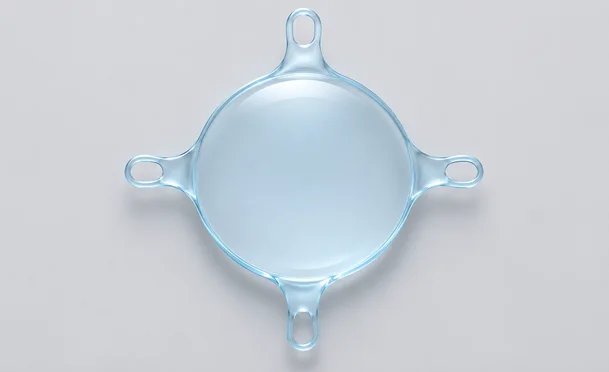
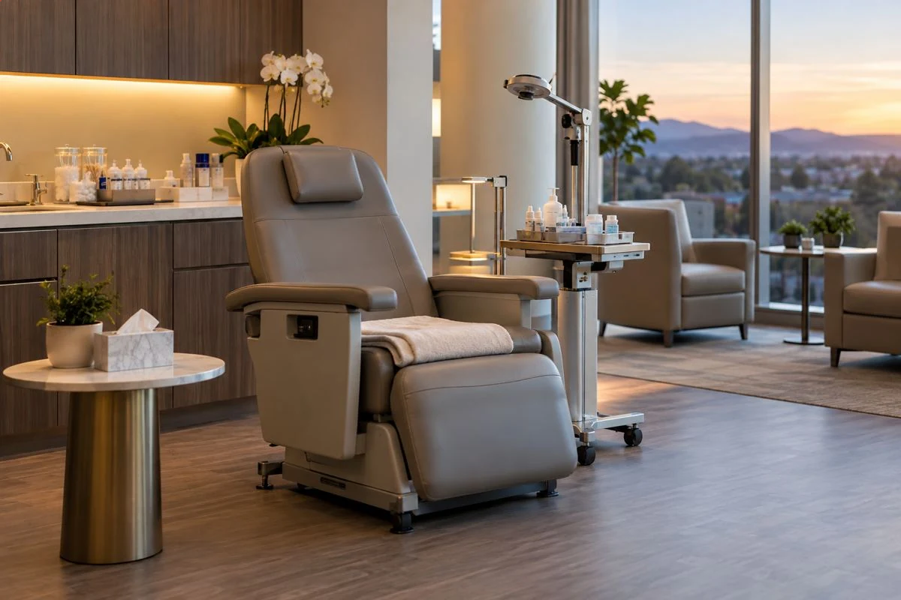
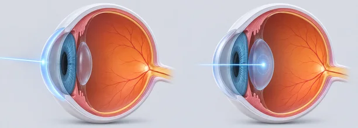

홍채절제술 없이 당일 검사 · 당일 수술
아쿠아ICL플러스
홍채절제술을 미리 받을 필요가 없어
눈에 맞는 렌즈가 준비되어 있다면
검사한 날 바로 수술할 수 있습니다.


광학부 중심의 360µm 홀
방수의 자연스러운 흐름회복
홍채절제술의 필요성을 제거
광학부 주변의
360µm Peri-Optic 홀
점탄물질 제거에 도움
중심홀의 역할을 증대
EVO+아쿠아ICL의 자체 방수 흐름

EVO Aqua ICL